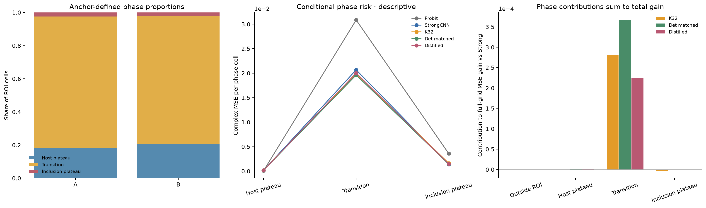

Anchor相区误差机制
相区完全由原physics anchor场值/halfwidth在ROI内按≤−1、(−1,1)、≥1划分，没有用GT材料给在线算法分类。
| Anchor相区 | ROI占比 | Strong每单元MSE | K32 | Det matched | Distilled |
|---|
| host_plateau | 19.331% | 0.00017453 | 0.00017437 | 0.00017015 | 0.00015622 |
| transition | 78.280% | 0.02067178 | 0.01986443 | 0.01961749 | 0.02002864 |
| inclusion_plateau | 2.390% | 0.00137591 | 0.00162740 | 0.00141097 | 0.00145209 |
过渡相占ROI 78.28%，不是薄薄一圈边界。Strong基准几乎全部风险已位于过渡相；因此大部分改善集中于它，不足以证明特殊Maxwell传播机制。Strong→distilled增量的 99.66%、K32→deterministic增量的 97.00% 来自该区。百分比可受其他区负改善抵消，不能当像素成功率。
每单元风险和总贡献不同：前者除该相区实际单元数，后者除576并按parent平均。空相区有显式valid mask，不按零误差混入。纯inclusion仅约2.39%，其中属性估计与anchor相区误分类耦合，未把该组均值当真实posterior材料属性。

相区占比、每单元风险与全图贡献